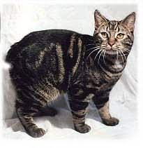

|  |
| Manx |
BEHAVIOR
The Manx cat breed is good natured and affectionate. They love a cuddle and are very adaptable to family life.
GROOMING
The Manx cat's coat does not require excessive grooming and these cats are quite capable of looking after their coat themselves. As with all cats, regular vaccination and parasite control is recommended.
HEALTH PROBLEMS
The lack of a tail is a severe genetic defect and the Manx cat's 'deformed' spine may cause problems. If misshaped vertebrae affect the spine the cat may be prone to arthritis from an early age. In some cats the anal passage may be narrowed and this can cause bowel blockages. The mutant gene that causes the taillessness may also be responsible for other skeletal deformities and when two completely tail-less 'rumpies' are mated together the offspring are often born dead or die shortly after birth. The spines of Manx cats almost always show other deformities, sometimes the vertebrae are shorter than normal and in the lower part of the spine they tend to fuse together and they may be fewer in number.
NUTRITION
Every cat is unique and each has their own particular likes, dislikes, and needs when it comes to food. However, cats are carnivores and every cat must obtain 41 different and specific nutrients from their food. The proportion of these nutrients will vary depending on age, lifestyle and overall health, so it's not surprising that a growing, energetic kitten needs a different balance of nutrients in her diet than a less active senior cat. Other considerations to bear in mind are feeding the right quantity of food to maintain 'ideal body condition' in accordance with feeding guidelines and catering to individual preference regarding wet or dry food recipes.